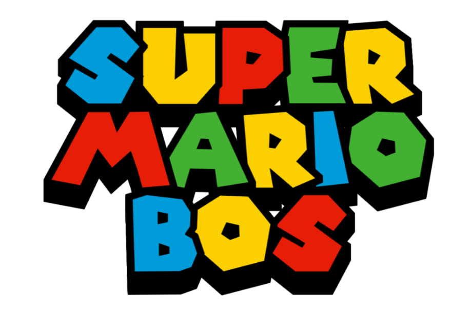
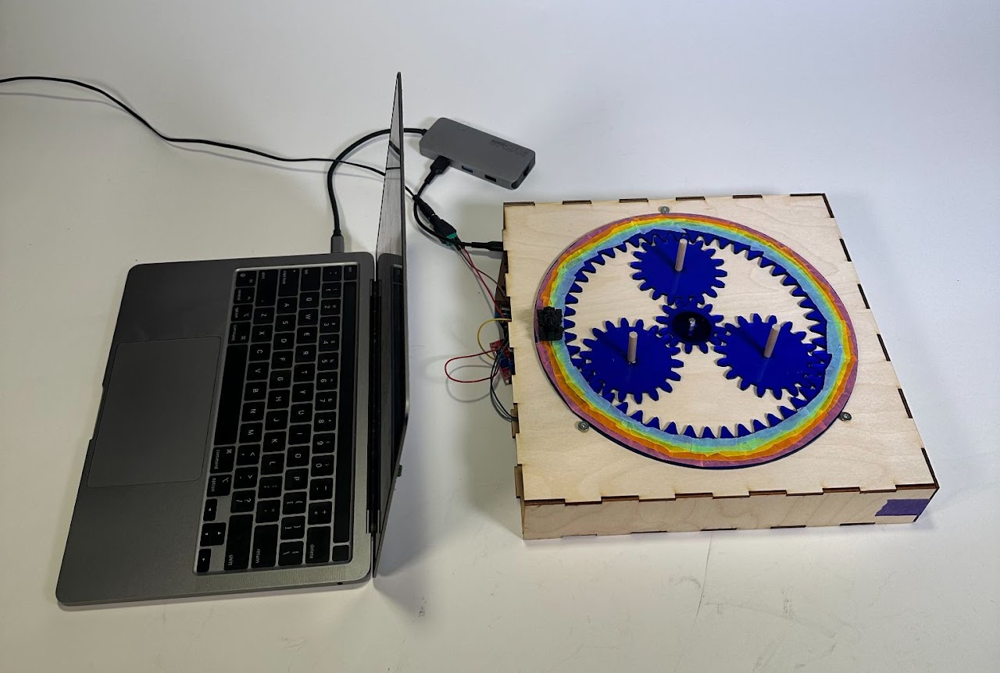
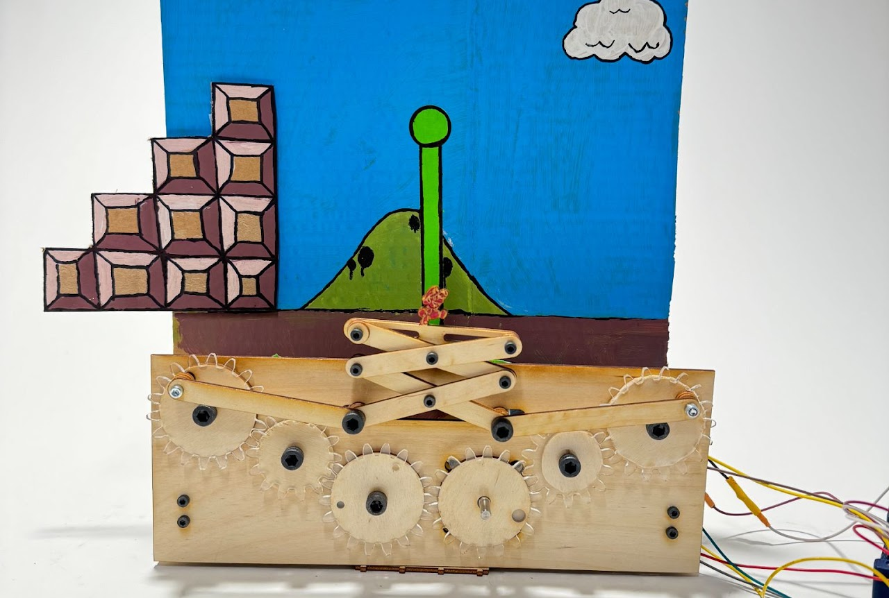
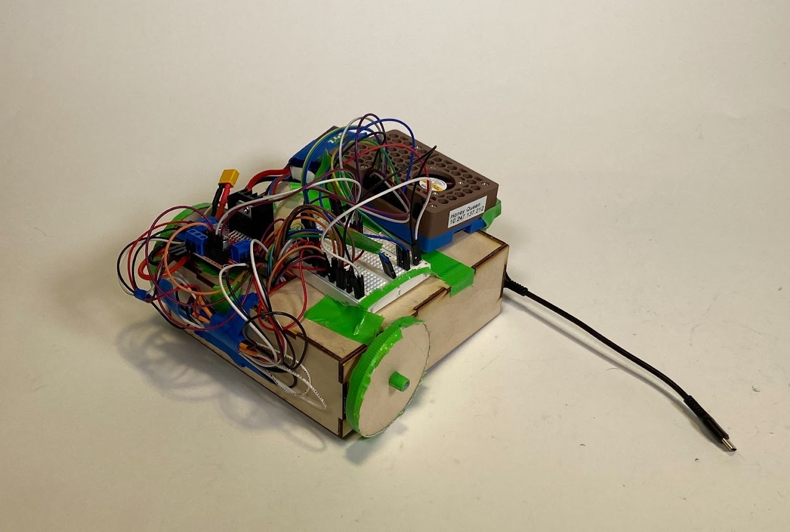
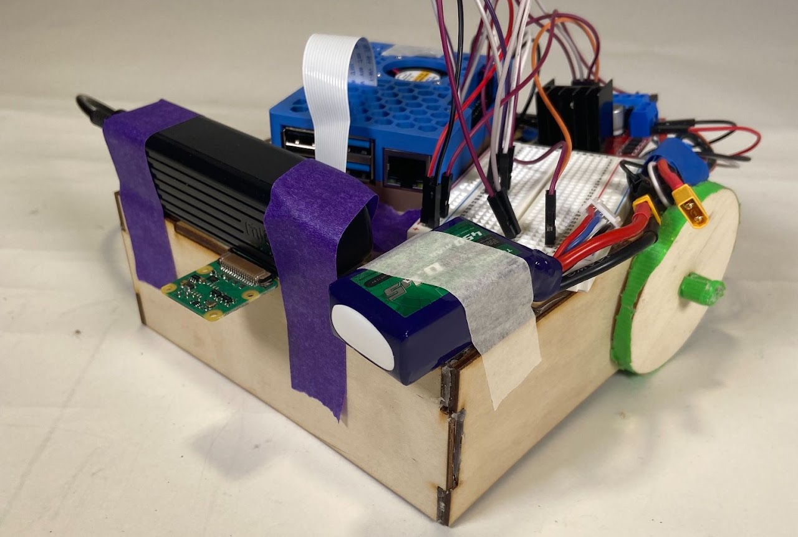
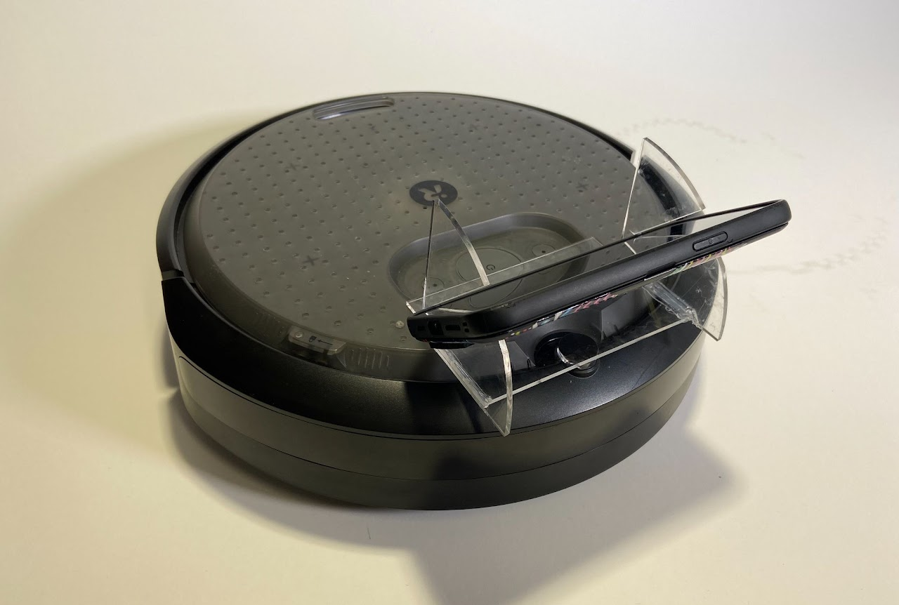
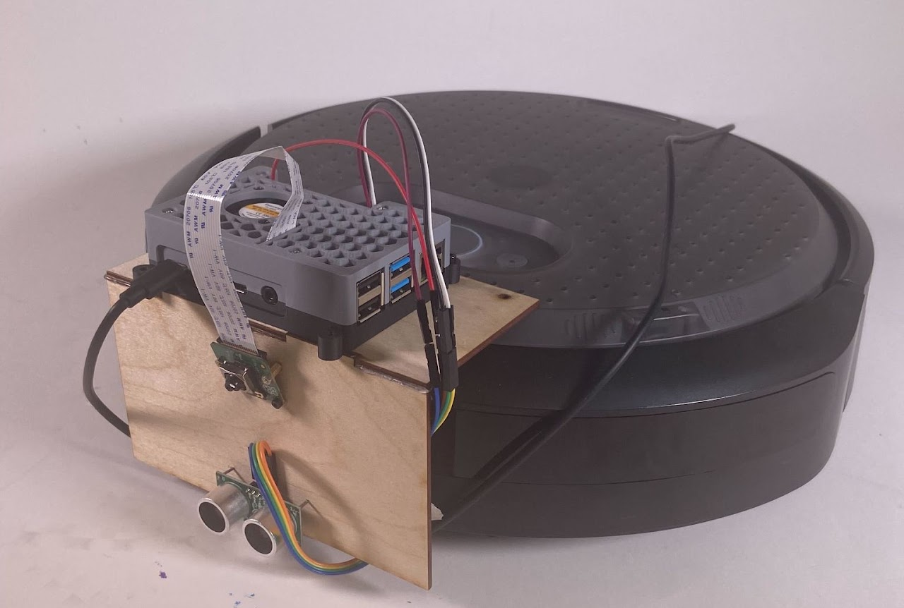

ME35 Portfolio

Here's my ME35 Portfolio!!!!
The class was Mario Kart-themed, hence the naming of the assignments (get it? Super Mario Jum-Bos!!)

Homework1: Double Jump
Designed and built a custom planetary gear system to move a character 90 degrees when a stepper motor turns a full 360 degree rotation.

Homework2: Flag Pole
Designed and built a geared linkage system that translates rotational motion into linear motion. The linear motion is constrained by two limit switches.

Homework3: Star Road
Designed and built a line following robot using color sensors and proportional control.

Homework4: Rainbow Road
Designed a robot that uses one camera to follow a line using edge detection and path memorization/backtracking.

Homework5: Pit Stop
Used the AirTable API to remotely control an iRobot Create3 robot. This project also uses ROS!!

Homework6: Mushroom Kingdom Raceway
Used the iRobot Create3 robot, ROS, and the Google Teachable Machine to navigate through a maze of objects.

Final Project: Automated Latte Making Machine
As a class (27 people) work as a team to build an automated latte making machine that could make up to three lattes in a row without running out of materials. The latte should consist of coffee from a Mixpresso coffee making machine, steamed/frothed milk, and cinnamon art in a Mario Kart themed pattern